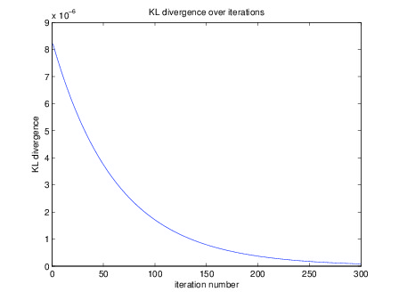
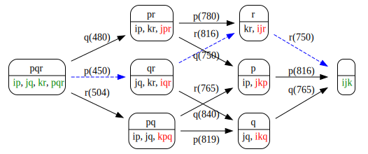
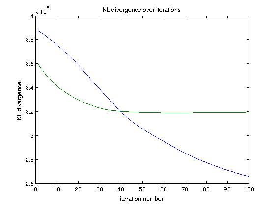
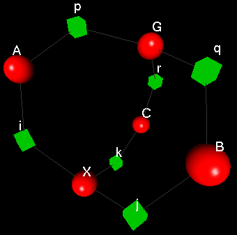
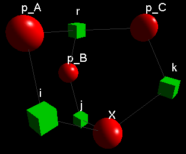

Tensor Factorization Toolbox (TFT)
Matlab Toolbox implementing Probabilistic Latent Tensor Factorization (PLTF)[1] and Generalised Coupled Tensor Factorisation (GCTF)[2] operations.
Features
- PLTF data structures are represented with PLTFModel, TFFactor and TFDimension classes.
- GCTF data structures are represented with GCTFModel with help from PLTFModel class.
- PLTF update rules: given a PLTF model, PLTF update rules available using the PLTFModel.pltf(iteration_number) function. The function displays and plots KL divergence (KL( X, hat_X)) values over PLTF iterations.
- GCTF update rules: given a GCTF model, GCTF update rules are performed using GCTFModel.gctf(iteration_number, contract_type) function. The function displays and plots KL divergence (KL( X_v, hat_X_v)) values over GCTF iterations for all of the models described in GCTF model.
- Model visualization: models are visualized using PLTFModel.print_ubigraph() function and fgplot.py with Ubigraph if available on your system.
- GTM contraction scheduling: PLTFModel.schedule_dp() function performs a dynamic programming search to find optimal contraction sequence by generating directed acyclic graph of all possible contraction sequences for a single Generalized Tensor Multiplication (GTM) operation.
- Basic inter-GTM memory re-use: each GTM contraction generates a set of temporary tensors. Minimizing use number of temporary tensors offers memory reduction and performance improvements due to re-used intermediate GTM results. Currently PLTFModel.schedule_dp() function looks up previously generated temporary tensors in optimal contraction paths of previous GTM operations. This is a suboptimal temporary tensor re-use detection method.
- GTM contraction scheduling visualization: contraction operations required for PLTF update rules are visualized using GraphViz with TFGraph.print_dot() function. PLTFModel.pltf_optimal_dot(svg_file_name) generates a SVG (Scalable Vector Graphics) image file of the basic inter-GTM memory re-use diagram using GraphViz.
- Global data usage: all essential data elements are stored as global variables so that duplicate copies of large data structures are avoided. All other object instances have relatively small memory footprint so that any (reasonable) number of objects can be manipulated without considerable performance issues.
PLTF Examples
PLTF models are composed of factors and factors are composed data in specified dimensions. TFT defines Matlab objects to store each one of these entities. A PLTFModel object contains an array of TFFactor objects and TFFactor objects contain a single array of TFDimension objects. This way primitive data structures of the framework are properly represented as Matlab objects.
Following sections describe contents of examples.m file, which contain sample model configurations and operations.
Tucker3 Model
Before we can declare a Tucker3 model we must first create a set of TFDimension objects:
dim_i = TFDimension('name', 'i', 'cardinality', 5);
dim_j = TFDimension('cardinality', 6, 'name', 'j');
dim_k = TFDimension('cardinality', 7, 'name', 'k');
dim_p = TFDimension('cardinality', 8, 'name', 'p');
dim_q = TFDimension('cardinality', 9, 'name', 'q');
dim_r = TFDimension('cardinality', 10, 'name', 'r');
With these TFDimension objects we can create factors of Tucker3 model:
A = TFFactor('name', 'A', 'type', 'latent', 'dims', [dim_i dim_p]);
B = TFFactor('name', 'B', 'type', 'latent', 'dims', [dim_j dim_q]);
C = TFFactor('name', 'C', 'type', 'latent', 'dims', [dim_k dim_r], 'isClamped', true);
G = TFFactor('name', 'G', 'type', 'latent', 'dims', [dim_p, dim_q, dim_r]);
X = TFFactor('name', 'X', 'type', 'observed', 'dims', [dim_i, dim_j, dim_k]);
TFFactor objects require specification following paramaters:
- type: type of the factor, values: latent, observed, temp.
- isClamped: data belonging to the latent factor is provided as input, values: true, false
All factor data is stored in global workspace of Matlab to avoid duplicate copies of large data structures. Handling global variables requires care with variable naming. To address this issue TFFactor objects contain get_data_name() function, which provides a standardized naming convension.
Once required TFFactor objects are created, we can create a PLTFModel object to encapsulate these factors:
tucker_model = PLTFModel('name', 'Tucker3', 'factors', [A B C G X], 'dims', [dim_i dim_j dim_k dim_p dim_q dim_r]);
PLTFModel objects contain an extra dims array. This array holds all dimension objects used in the model for two reasons. First is convenience, whenever necessary this array lists all dimension objects readily available. Second is to define the order of dimensions. Ordering of dimensions is crucial when exporting variables to C++ environment.
To initialize model data conveniently PLTFModel objects contain the rand_init function. This function takes in two parameters:
- all_dims: all dimension objects array, which is used to generate empty dimensions in Matlab array data in case factor does not have data in any one of available dimensions.
- max_int: maximum range of random integers. If not specified values are initialized to random numbers between 0 and 1.
PLTFModel.rand_init_latent_factors('type') function conveniently executes rand_init function for all latent factors of the model. 'type' parameter can be specified as 'nonClamped' or 'all' in order to initialize only non clampled factors or all factors repectively.
For Tucker3 model we can use following initalization:
tucker_model.rand_init_latent_factors('nonClamped'); % does not initialize clamped factors
X.rand_init(tucker_model.dims, 100); % init observation tensor
C.rand_init(tucker_model.dims, 100); % init clamped tensor
PARAFAC Model
We can use a set of TFDimension objects in any number of models since PLTFModel objects do not modify dimension objects. For insance we can create a PARAFAC model using dimension objects used in Tucker3 model:
p_A=TFFactor('name', 'p_A', 'type', 'latent', 'dims', [dim_i dim_r]);
p_B=TFFactor('name', 'p_B', 'type', 'latent', 'dims', [dim_j dim_r]);
p_C=TFFactor('name', 'p_C', 'type', 'latent', 'dims', [dim_k dim_r]);
parafac_model = PLTFModel('name', 'Parafac', 'factors', [p_A p_B p_C X], 'dims', [dim_i dim_j dim_k dim_r]);
parafac_model.rand_init_latent_factors('all');
PLTF Update Rules
Automatically generated PLTF update rules can be executed using PLTFModel.pltf(iteration_number) function. KL divergence values are returned and plotted by the function. Following plot is generated with this command: tucker_model.pltf(300)

To utilize contraction scheduling on PLTF update rule calculations second parameter must be specified like so: tucker_model.pltf(iteration_number, 'optimal')
Contraction Scheduling
PLTF update equations involve a number of Generalized Tensor Multiplication (GTM) operations. Similar to the case in chain matrix multiplication, due to the associativity property of the operation order of chain GTM operations result in different amount of memory usage.
PLTFModel.schedule_dp() function performs a dynamic programming search among all possible contraction sequences of a single GTM and finds the contraction sequence which requires the least amount of memory. Depending on the model specification optimal contraction sequence may improve PLTF operation performance and increase tractable problem size. The function does not manipulate any data. Search operations are conducted on objects which define the required contraction. Once optimal path is discovered, operations on the data are performed only once using the optimal sequence.
TFGraph object is used to store the dyanmic acyclic graph (DAG) structures produced during the search. TFGraph.print_dot() function can be used to visualize the graph objects. Following graph displays the DAG generated for the first operation of PLTF in Tucker3 model. Top part of each node shows dimensions on which contraction must be applied. Bottom part of each node describes factors required by the node. Some of these factors are latent factors and some are temporary factors.
Since different contraction sequences utilize different temporary factors, different contraction sequences result in different amounts of memory usage. Numbers in paranthesis display the cumulative memory required for the contraction operation defined by the edge. Once search is complete, selecting the minimal memory using edge suffices to follow the least memory using sequence.
graph = tucker_model.schedule_dp();
system([ 'echo '' ' graph.print_dot [ ' '' | dot -T svg | display' ]]);

Green: input/output tensors, red: temporary tensors. Blue dashed line: optimal contraction path for this GTM. Optimal contraction path for this GTM: pqr.
Note: dot comes in GraphViz package, display comes in ImageMagick package both are available in Debian/Ubuntu repositories. Please note that required GraphViz version is 2.29.
Memory Analysis
It is possible to analyse memory usage of models before executing PLTF updates with the third optional parameter of PLTFModel.pltf(iteration_number, contraction_type, operation_type) function. Full list of possible parameters are listed below for tucker_model:
tucker_model.pltf(10, 'optimal', 'compute')
iteration 1
iteration 2
iteration 3
iteration 4
iteration 5
iteration 6
iteration 7
iteration 8
iteration 9
iteration 10
KL divergence over iterations:
KL =
1.0e+03 *
1.7094 1.7007 1.6900 1.6794 1.6688 1.6581 1.6471 1.6357 1.6238 1.6114
data elements required: 3282
memory size with (8 byte) double precision: 0.026256 MB
Above command executes PLTF update rules on Tucker3 model defined in previous sections. At the end of the execution amount of data memory employed is listed. This figure includes all model data elements as well as all temporary tensors generated in intermediate contraction operations. Another version of this command lists memory usage without executing the actual data operations:
tucker_model.pltf(10, 'optimal', 'mem_analysis')
data elements required: 3282
memory size with (8 byte) double precision: 0.026256 MB
For experimental purposes a second contraction function is also available. This function is the most parallelizable version of contraction as well as the most memory using. In this mode each contraction operation is performed using a "full tensor", which is the largest possible tensor for a given model. All latent tensors are multiplied into the full tensor and then full tensor is contracted over necessary indices to calculate the output. Following code displays an example:
tucker_model.pltf(10, 'full', 'compute');
iteration 1
iteration 2
iteration 3
iteration 4
iteration 5
iteration 6
iteration 7
iteration 8
iteration 9
iteration 10
KL divergence over iterations:
KL =
1.0e+03 *
1.0944 1.0708 1.0467 1.0226 0.9986 0.9748 0.9515 0.9288 0.9067 0.8854
data elements required: 154482
memory size with (8 byte) double precision: 1.2359 MB
GCTF Examples
Following section describes Tucker3 and Parafac models with a shared C factor.
% assume dim_i, dim_j, dim_k, dim_p, dim_q, dim_r are defined same as above
% tucker3 factors
A=TFFactor('name', 'A', 'type', 'latent', 'dims', [dim_i dim_p]);
B=TFFactor('name', 'B', 'type', 'latent', 'dims', [dim_j dim_q]);
C=TFFactor('name', 'C', 'type', 'latent', 'dims', [dim_k dim_r], 'isClamped', true);
G=TFFactor('name', 'G', 'type', 'latent', 'dims', [dim_p, dim_q, dim_r]);
X=TFFactor('name', 'X', 'type', 'observed', 'dims', [dim_i, dim_j, dim_k]);
% parafac factors
p_A=TFFactor('name', 'p_A', 'type', 'latent', 'dims', [dim_i dim_r]);
p_B=TFFactor('name', 'p_B', 'type', 'latent', 'dims', [dim_j dim_r]);
p_X=TFFactor('name', 'p_X', 'type', 'observed', 'dims', [dim_i, dim_j, dim_k]);
% gctf model with shared C latent factor
tucker_parafac_model = GCTFModel( 'name', 'tucker3_parafac', 'dims', [dim_i dim_j dim_k dim_p dim_q dim_r] , ...
'observed_factors', [ X p_X ], 'R', { [A B C G], [p_A p_B C] } );
% initialize factors
tucker_parafac_model.rand_init_latent_factors('all');
X.rand_init(tucker_parafac_model.dims, 100) % init observation
p_X.rand_init(tucker_parafac_model.dims, 100) % init observation
C.rand_init(tucker_parafac_model.dims, 100) % init clamped
All factors are initialized exactly same as in the PLTF example. Then instead of building separate Tucker3 and Parafac models we build a GCTFModel instance, which contains factors belonging to both models. Dimensions of the GCTF instance contain all of the dimensions used in any of the models.
'observed_factors' parameter includes the observed factor of each sub-model. Coupling matrix R is represented with a simpler notation using a cell of TFFactor lists. Each cell element describes latent factors of the corresponding 'observed_factor'. For instance in the above example first observed factor 'X' is calculated using A, B C and G latent factors as in the Tucker3 model. In this GCTF model Tucker3 model is coupled with Parafac model over C latent factor.
For a given model GCTFModel.gctf(iteration_number, contract_type) function runs GCTF update rules on given models. KL divergence values are reported for each model separately. Boths series of values are plotted on the same graph for convenience not for comparison since comparing KL divergence values is not necessarily meaningful. contract_type may be one of the following 'optimal', 'standard'. In standard mode contraction order is used as it is given in the model. In optimal mode schedule_dp() is run in the first iteration for each GTM operation and stored in a global data structure and re-used in following iterations.

PLTF Model Visualization
PLTFModel objects can be visualized using Ubigraph utility. Ubigraph must be setup and running on the host system before following visualization can be achieved.
[dn fn edges] = tucker_model.print_ubigraph();
system(['python utils/visualize/fgplot.py "' dn '" "' fn '" "' edges '"' ]);
Tucker3 model defined above produces the following image:

Similarly PARAFAC model can be visualized as well:
[dn fn edges] = parafac_model.print_ubigraph();
system(['python utils/visualize/fgplot.py "' dn '" "' fn '" "' edges '"' ]);

Changelog
v0.05 - 01.11.2012
- GCTF contract type support added.
v0.04 - 18.10.2012
- Latent factor addressing indices bug fix. Thanks to Onur Güngör for testing.
v0.03 - 18.10.2012
- GCTF update rules computation
- Simple inter-GTM memory re-use for optimal contraction path detection
- Dot output prettify
v0.02 - 17.08.2012
- Memory analysis with PLTFModel.pltf() parameter
- Full tensor contraction implementation added
v0.01 - 16.08.2012
References
[1] Yilmaz, K. and Cemgil, A. T., Probabilistic Latent Tensor factorisation, Proc. of International Conference on Latent Variable analysis and Signal Separation, 2010, 6365, 346-353
[2] Yilmaz, K. Y.; Cemgil, A. T. and Simsekli, U. Generalized Coupled Tensor Factorization, NIPS, 2011